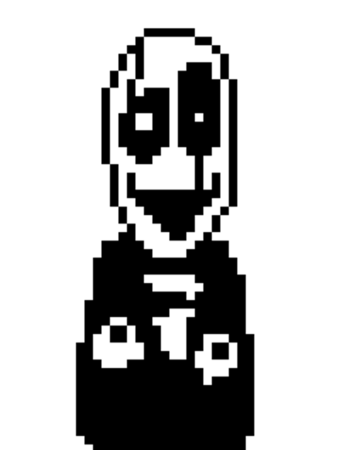

Não é muito revelado sobre a vida, tão pouco pela personalidade de Gaster. Toda via, de acordo com seus seguidores, o cientista estaria realizando experimentos, supostamente com antimatéria (a julgar pela citação dos fótons em sua nota), além de estar relacionado com a criação de uma máquina de absorção de determinação encontrada no laboratório verdadeiro. De acordo com seus seguidores, Gaster caiu em sua criação, pois seus experimentos deram errado, e enfim acabou preso no espaço-tempo. Ainda, é possível deduzir que, ao cair em sua criação, o cientista apagou a linha do tempo existente, criando uma em que ele jamais existiu (atual), e ficando preso na anterior. Entretanto, aparentemente de alguma forma ele parece ter as habilidades de poder interagir com a linha do tempo em que ele não existe, se comunicar com ela através de seus seguidores e até mesmo se materializar nestes por alguns momentos. Um fato misterioso é que nenhum outro personagem apresenta provas concretas sobre estar existente da existência de Gaster . Apenas Sans aparentemente dá um sentido que o conhece. Pra explicar isso, existem teorias dizendo que Gaster é pai de Sans e Papyrus. Essa teoria pode ser verdade, considerando que Sans, Papyrus e W. D. Gaster são fontes (Comic Sans MT, Papyrus e WingDing).


W.D Gaster